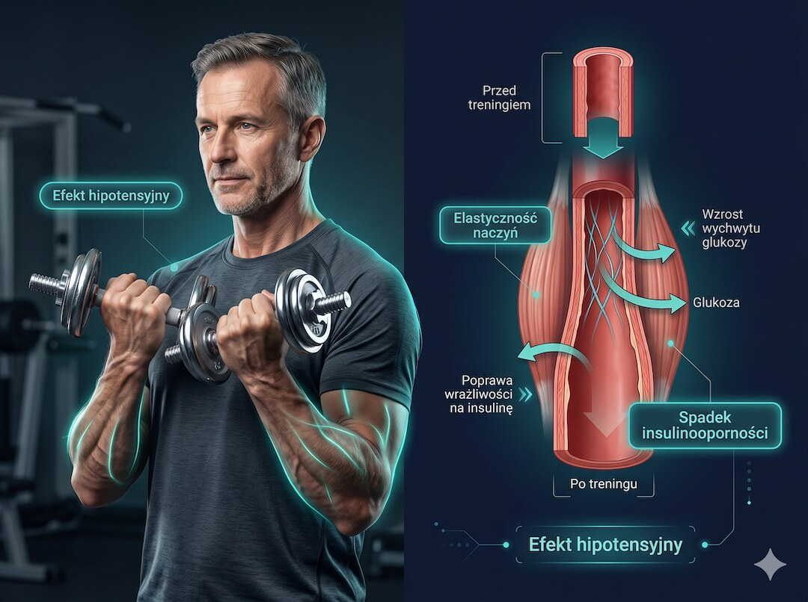
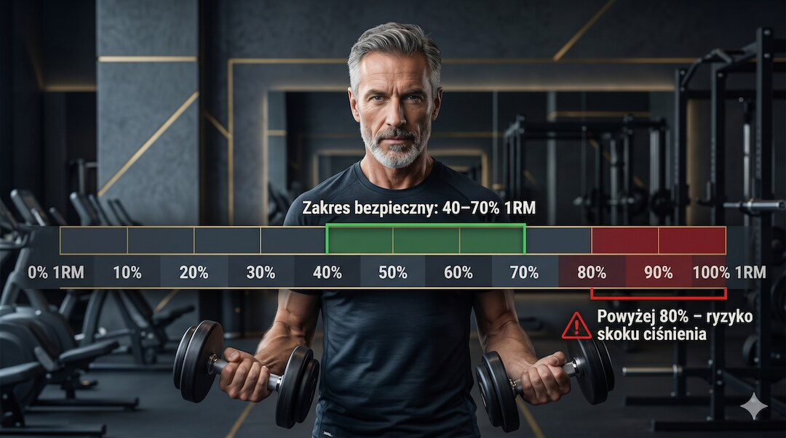
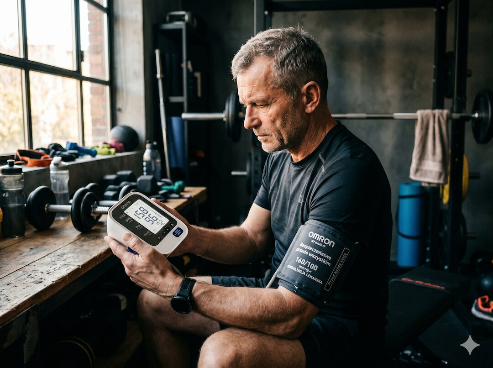
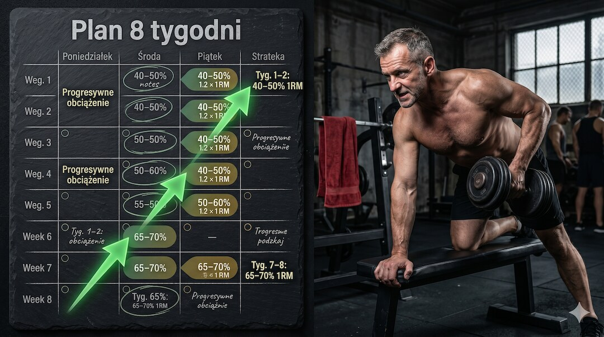
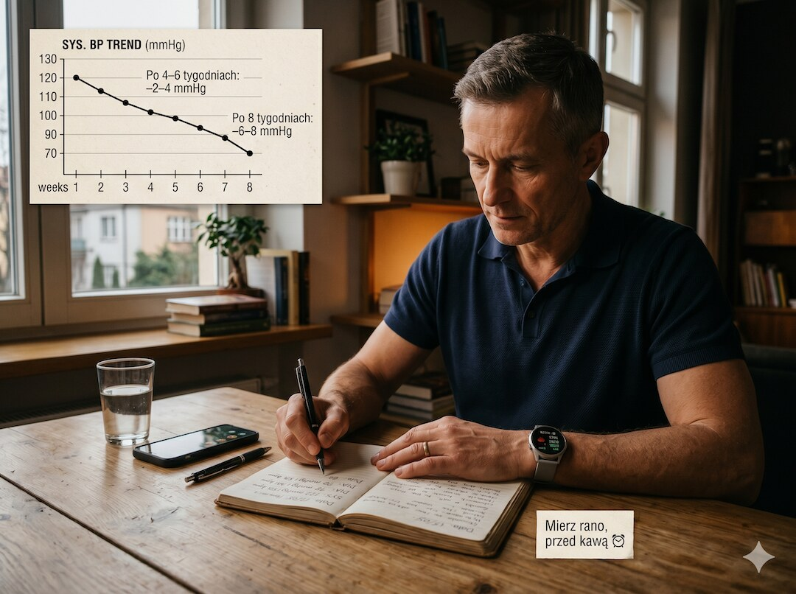

Trening siłowy po 50. roku życia może skutecznie obniżyć ciśnienie skurczowe nawet o 4–8 mmHg – bez leków. Kluczem są właściwe zakresy intensywności, progresywne obciążenie i plan dostosowany do dojrzałego organizmu. Ten materiał pokazuje, co dokładnie działa, na jakim poziomie i jak wdrożyć to w 8 tygodniach.
Szybka odpowiedź
Tak, trening siłowy skutecznie obniża ciśnienie tętnicze – badania potwierdzają redukcję ciśnienia skurczowego o 4–8 mmHg po regularnych ćwiczeniach. Najlepsze efekty daje intensywność 40–70% ciężaru maksymalnego (1RM), 2–3 sesje tygodniowo, każda po 45 minut. Pierwsze mierzalne efekty pojawiają się już po 6–8 tygodniach systematycznej pracy z obciążeniem.
Kluczowe wnioski
- Regularne ćwiczenia z oporem obniżają ciśnienie skurczowe o 4–8 mmHg – efekt porównywalny z niską dawką leku hipotensyjnego
- Optymalny zakres intensywności to 40–70% jednopowtórzeniowego ciężaru maksymalnego (1RM) – powyżej 80% ryzyko skoku ciśnienia wyraźnie rośnie
- Dwie lub trzy sesje tygodniowo po 40–50 minut wystarczą, by po 8 tygodniach uzyskać mierzalne, trwałe obniżenie ciśnienia
- Ciśnienie spoczynkowe ≥160/100 mmHg to bezwzględny sygnał do konsultacji lekarskiej przed rozpoczęciem treningu siłowego
Czy trening siłowy rzeczywiście obniża ciśnienie krwi?
Trening siłowy od lat kojarzony był raczej z budowaniem masy mięśniowej niż z leczeniem nadciśnienia. Tymczasem metaanalizy z ostatnich 10 lat jednoznacznie pokazują, że regularne ćwiczenia z oporem obniżają ciśnienie skurczowe średnio o 4–8 mmHg, a rozkurczowe o 2–4 mmHg. To wynik porównywalny z efektem jednego leku hipotensyjnego stosowanego w niskiej dawce.
Mechanizm jest dwutorowy. Trening siłowy poprawia elastyczność naczyń krwionośnych i redukuje ich sztywność, co bezpośrednio przekłada się na niższe ciśnienie. Jednocześnie mięśnie szkieletowe stają się lepszym rezerwuarem glukozy, spada insulinooporność – a to jeden z kluczowych czynników podwyższonego ciśnienia u osób po 50. Więcej o mechanizmach adaptacji znajdziesz w artykule o treningu siłowym dla osób 50+.
Analiza 64 badań klinicznych opublikowana w Journal of the American Heart Association wykazała spójny, powtarzalny efekt hipotensyjny w różnych grupach wiekowych, z wyraźnie silniejszym działaniem u osób z wyjściowo podwyższonym ciśnieniem – a to właśnie typowa sytuacja po 50. roku życia.

Jakie zakresy intensywności są bezpieczne i skuteczne po 50.?
Intensywność to najważniejszy parametr treningu siłowego przy nadciśnieniu. Badania wskazują na optymalny zakres 40–70% jednopowtórzeniowego ciężaru maksymalnego (1RM). Poniżej 40% efekt hipotensyjny jest zbyt słaby, powyżej 80% ryzyko gwałtownych skoków ciśnienia wyraźnie wzrasta. Dla osób po 50. z podwyższonym ciśnieniem zaleca się start od 40–50% 1RM i stopniowe zwiększanie w kolejnych tygodniach.
Równie ważna jest długość przerwy między seriami. Zbyt krótka pauza, poniżej 60 sekund, powoduje skumulowane skoki ciśnienia podczas kolejnych serii. Optymalne wartości to 60–90 sekund przy intensywności 40–60% 1RM oraz 90–120 sekund przy 60–70% 1RM. Liczba powtórzeń w serii powinna wynosić 12–15 przy niższej intensywności i 8–12 przy wyższej.
Pamiętaj o oddechu – to jeden z najczęstszych błędów przy treningu z ciężarami. Wstrzymywanie oddechu podczas wysiłku (manewr Valsalvy) może chwilowo podnieść ciśnienie do bardzo wysokich wartości. Zasada jest prosta: wydychaj powietrze podczas fazy koncentrycznej, wdychaj podczas ekscentrycznej.
- 40–50% 1RM – faza wstępna (tygodnie 1–2), 15 powtórzeń, przerwa 60 sek.
- 50–60% 1RM – faza budowania (tygodnie 3–4), 12–15 powtórzeń, przerwa 75 sek.
- 60–70% 1RM – faza docelowa (tygodnie 5–8), 10–12 powtórzeń, przerwa 90–120 sek.
- Nigdy powyżej 80% 1RM, jeśli ciśnienie spoczynkowe przekracza 140/90 mmHg

Co mówią najnowsze badania naukowe o treningu siłowym i ciśnieniu?
Kluczowa metaanaliza opublikowana w 2023 roku w British Journal of Sports Medicine (Carvalho i wsp.) przeanalizowała 270 badań klinicznych z udziałem ponad 15 000 uczestników. Wynika z niej, że izometryczny trening siłowy daje najsilniejszy efekt hipotensyjny, ale klasyczne ćwiczenia z oporem dynamicznym są bezpieczniejsze i łatwiejsze do wdrożenia przez osoby po 50.
Badanie HERITAGE Family Study wykazało, że odpowiedź ciśnieniowa na trening jest częściowo uwarunkowana genetycznie – u części osób efekt jest silniejszy, u innych słabszy. Jeśli po 8 tygodniach rzetelnego treningu nie widzisz spadku ciśnienia, to może być kwestia biologii, a nie braku wysiłku. Warto wtedy rozważyć połączenie treningu siłowego z treningiem cardio po 50 – efekt addytywny jest potwierdzony badaniami.
Adaptacje naczyniowe wywołane treningiem siłowym nie zanikają natychmiast po przerwie. Badania wskazują, że utrzymują się przez 2–4 tygodnie od zakończenia regularnych sesji. To spora przewaga nad efektem farmakologicznym, który znika niemal natychmiast po odstawieniu leku.
Jak trenować siłowo przy nadciśnieniu – co wolno, a czego unikać?
Nadciśnienie tętnicze samo w sobie nie jest przeciwwskazaniem do treningu siłowego – pod warunkiem, że ciśnienie jest kontrolowane farmakologicznie lub dietetycznie, a wartości spoczynkowe nie przekraczają 160/100 mmHg. Przed rozpoczęciem programu treningowego zawsze wymagana jest konsultacja z lekarzem oraz pomiar ciśnienia przed każdą sesją. To nie jest opcja, to standard bezpieczeństwa.
Szczególną ostrożność zaleca się przy ćwiczeniach izometrycznych i przy ruchach z dużym komponentem Valsalvy – np. klasyczny martwy ciąg z maksymalnym obciążeniem. Dla osób z nadciśnieniem lepszym wyborem są ćwiczenia wielostawowe z umiarkowanym ciężarem: przysiady goblet, wiosłowanie z hantlami, wyciskanie na maszynie. Dokładne wskazówki dotyczące bezpiecznego startu przy nadciśnieniu znajdziesz w dedykowanym poradniku.
Absolutne sygnały do natychmiastowego przerwania treningu: ból głowy podczas wysiłku, zawroty głowy, uczucie pulsowania w skroniach, mroczki przed oczami lub duszność nieproporcjonalna do obciążenia. Każdy z tych objawów wymaga zmierzenia ciśnienia. Jeśli przekracza 180/110 mmHg – jedź na izbę przyjęć.
- WOLNO: przysiady goblet, wiosłowanie z hantlami, wyciskanie siedząc na maszynie, hip thrust, ściąganie drążka
- UNIKAĆ: ćwiczenia izometryczne z dużym obciążeniem, martwy ciąg powyżej 80% 1RM, pozycje z głową poniżej tułowia
- ZAWSZE: pomiar ciśnienia przed treningiem, 10-minutowa rozgrzewka, 5–10 minut wyciszenia po sesji
- STOP: ból głowy, zawroty, mroczki przed oczami, ciśnienie powyżej 180/110 mmHg w trakcie sesji

Jak wygląda plan treningu siłowego na 8 tygodni krok po kroku?
Plan 8-tygodniowy oparty jest na zasadzie progresywnego przeciążenia – każde dwa tygodnie zwiększasz intensywność lub objętość o 5–10%. Trening odbywa się 2–3 razy w tygodniu, z co najmniej jednym dniem przerwy między sesjami. Ćwiczenia obejmują główne grupy mięśniowe: nogi, plecy, klatkę piersiową i ramiona. Każda sesja trwa 40–50 minut.
Tygodnie 1–2 (adaptacja techniczna): 3 serie po 15 powtórzeń, intensywność 40–50% 1RM, przerwa 60 sekund między seriami. Ćwiczenia: przysiad goblet, wiosłowanie z hantlami, wyciskanie hantli siedząc, odwrotne wykroki, ściąganie drążka na maszynie. Każda sesja kończy się 5 minutami spokojnego marszu lub roweru stacjonarnego.
Tygodnie 3–4 (budowanie bazy): 3–4 serie po 12 powtórzeń, intensywność 50–60% 1RM, przerwa 75 sekund. Do zestawu wchodzi hip thrust z hantlą oraz wyciskanie na suwnicy. Sprawdzaj ciśnienie przed i po każdej sesji i zapisuj wyniki – to najcenniejszy wskaźnik postępu, ważniejszy niż liczba kilogramów na sztandze.
Tygodnie 5–8 (efekt docelowy): 4 serie po 10–12 powtórzeń, intensywność 60–70% 1RM, przerwa 90–120 sekund. Możesz wprowadzić split (dzień A: nogi i plecy, dzień B: klatka, ramiona, core). Uzupełnij trening dietą wspierającą ciśnienie bogatą w potas i magnez, co wzmocni efekt hipotensyjny.
- Tygodnie 1–2: 40–50% 1RM | 3×15 | przerwa 60 sek. | cel: adaptacja techniczna
- Tygodnie 3–4: 50–60% 1RM | 3–4×12 | przerwa 75 sek. | cel: budowanie bazy siłowej
- Tygodnie 5–6: 60–65% 1RM | 4×12 | przerwa 90 sek. | cel: wzrost obciążenia
- Tygodnie 7–8: 65–70% 1RM | 4×10 | przerwa 120 sek. | cel: pełny efekt hipotensyjny

Po jakim czasie zobaczysz pierwsze efekty i jak je rzetelnie mierzyć?
Efekt hipotensyjny treningu siłowego pojawia się stopniowo, ale jest mierzalny szybciej, niż większość osób przypuszcza. Po 4–6 tygodniach regularne pomiary zazwyczaj pokazują pierwsze obniżenie ciśnienia skurczowego o 2–4 mmHg. Pełny efekt – redukcja o 6–8 mmHg lub więcej – widoczny jest zwykle po 8–12 tygodniach konsekwentnego treningu 2–3 razy w tygodniu.
Klucz do wiarygodnej oceny efektów to standaryzowane pomiary. Mierz ciśnienie zawsze rano, po 5 minutach siedzenia w spokoju, przed jedzeniem i kawą. Używaj atestowanego ciśnieniomierza automatycznego na ramię – modele na nadgarstek bywają mniej wiarygodne, zwłaszcza po 50. Zapisuj wyniki w dzienniku lub prostym arkuszu – bez danych nie wiesz, czy progres jest realny.
Nie oceniaj efektów po jednym pomiarze. Liczy się średnia z co najmniej 5–7 pomiarów wykonanych w różnych dniach. Jeśli po 8 tygodniach rzetelnego treningu średnie ciśnienie skurczowe spadło o ≥4 mmHg – plan zadziałał. Jeśli efekt jest słabszy – sprawdź nasz poradnik o monitorowaniu ciśnienia przy aktywności fizycznej i rozważ konsultację lekarską.

Najczęściej zadawane pytania
Czy mogę ćwiczyć siłowo przy nadciśnieniu?
Tak, przy nadciśnieniu kontrolowanym (ciśnienie spoczynkowe poniżej 160/100 mmHg) trening siłowy jest bezpieczny i zalecany. Konieczna jest wcześniejsza konsultacja lekarska. Intensywność dobierz do zakresu 40–70% 1RM, nie stosuj manewru Valsalvy i mierz ciśnienie przed każdą sesją. Przy wartościach powyżej 160/100 mmHg w dniu treningu – odpuść sesję i skonsultuj wynik z lekarzem.
O ile mmHg trening siłowy może obniżyć ciśnienie?
Metaanalizy wskazują na redukcję ciśnienia skurczowego o 4–8 mmHg i rozkurczowego o 2–4 mmHg po regularnym treningu siłowym trwającym 8–12 tygodni. Efekt jest silniejszy u osób z wyjściowo wyższym ciśnieniem (powyżej 140/90 mmHg). Połączenie treningu siłowego z aerobowym może dać redukcję skurczowego nawet o 10–12 mmHg.
Jak obliczyć swoje 1RM bez ryzykownego testu maksymalnego?
Dla osób po 50. z nadciśnieniem bezpośredni test 1RM jest zbyt ryzykowny. Zamiast tego stosuj wzór Brzycki na podstawie submaksymalnego testu:
1RM = ciezar_kg / (1.0278 - 0.0278 * liczba_powtorzen)Przykład: wyciśniesz 30 kg na 12 powtórzeń, więc 1RM = 30 / (1.0278 - 0.0278 * 12) = 30 / 0.6942 = 43.2 kg. Twój zakres treningowy 50-60% to 21.6-25.9 kg. Wzór jest wiarygodny dla 6-15 powtórzeń; powyżej 15 dokładność spada.
Czy lepszy jest trening siłowy czy cardio na ciśnienie?
Oba działają, ale różnymi mechanizmami. Cardio o umiarkowanej intensywności (60–75% HRmax) obniża ciśnienie nieco skuteczniej niż sam trening siłowy – o ok. 5–10 mmHg skurczowego. Jednak połączenie obu form daje efekt addytywny: badania wskazują na redukcję o 10–12 mmHg. Dla osób po 50. idealny tygodniowy plan to 2 sesje siłowe plus 2–3 sesje cardio po 30–40 minut.
Jak szybko ciśnienie wróci do góry, jeśli przestanę ćwiczyć?
Adaptacje naczyniowe utrzymują się przez 2–4 tygodnie po przerwie, następnie ciśnienie stopniowo wraca do wartości wyjściowych. Nawet jedna sesja tygodniowo w trudnych okresach pozwala podtrzymać część efektu. Całkowita utrata korzyści następuje zazwyczaj po 6–10 tygodniach braku aktywności fizycznej.
Źródła
- Cornelissen VA, Smart NA. Exercise Training for Blood Pressure: A Systematic Review and Meta-Analysis. J Am Heart Assoc. 2013.
- Carvalho et al. Comparative effectiveness of different exercise types for blood pressure reduction. Br J Sports Med. 2023;57(20):1317.
- American Heart Association – Getting Active to Control High Blood Pressure.
- ESC/ESH Guidelines for the Management of Arterial Hypertension 2023. European Heart Journal.
- NIH – National Institute on Aging: Exercise and Physical Activity.
- Liu Y et al. Effects of resistance training on blood pressure in hypertensive patients. PubMed 2019.
- Kelley GA, Kelley KS. Progressive resistance exercise and resting blood pressure: A meta-analysis of randomized controlled trials. Hypertension. 2000.
Uwaga: Artykuł ma charakter informacyjny i edukacyjny. Nie zastępuje konsultacji lekarskiej, diagnozy ani leczenia.